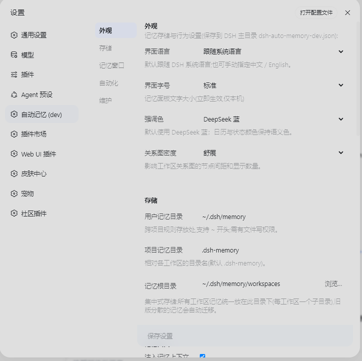
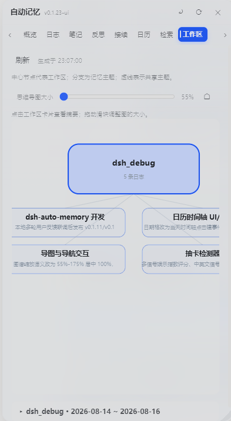

DEEPSEEK HARNESS PLUGIN · dsh-auto-memory
无问自忆，
记忆不断线。
dsh-auto-memory 把记忆放在上下文窗口之外：该想起的自己浮现，每次唤起都有证据链可查。上下文写满时，她不再把自己压缩成一段摘要——合上一本写满批注的笔记，翻开新的一页。
pnpm add @a9i5k4/dsh-auto-memory@latest
npm ↗
记忆从不靠模型「想起来」。宿主盯着上下文，在固定边界自动注入召回——前缀缓存友好，不需要任何指令。
每次唤起都带完整证据链：可在「唤起回顾」逐条评分，逐条可查、可改、可删。技能由跨会话证据通过晋升闸门固化而成。
- 1
无问自忆
宿主盯上下文，固定边界自动注入，零指令、前缀缓存友好。
- 2
三层记忆
用户级规则 → 项目级笔记 → 每日日志；常驻注入 + 按需检索。
- 3
记忆自己写自己
子代理逐轮静默评估，按主题归档成条目，无需「记得去记」。
- 4
唤起可审计
每次召回带完整证据链，可逐条评分；技能由跨会话证据固化。
- 5
主动提醒
从对话里识别截止日期与承诺，写入日历，到点提醒。
- 6
一切皆开关
首启向导 + 设置页，每个功能单独可开关，含无人值守模式。
- 7
外部记忆继承
WorkBuddy / CodeBuddy / Claude Code / Codex 的记忆可扫描、可导入、分源管理。
- 8
生产级卫生
写入闸门（乱码/卡顿/JSON 注入拦截）+ 脏 token 扫描 + 凭据不进提示词。
- 9
上下文管理
四段式交接账本跨窗口续命，全程历史可检索；水位感知（实验）。
- 10
工作区隔离
多工作区/多会话并行，各自召回决策与索引缓存互不打扰。
- 11
模型无关
任何模型开箱即用：词法 0GB 起步，内置 ~130MB 语义档，进阶 ~563MB。
- 12
记忆可携带
一切都在你自己的磁盘上，每条可查、可改、可删。



界面截图摄于 v2.x，将随前端重构定稿后统一重拍。
STEP 01
安装
npm / pnpm 均可：
$pnpm add @a9i5k4/dsh-auto-memory@latest
pnpm v11 若拦截 24h 内新版本：minimumReleaseAge 设 0 或固定版本号。
STEP 02
重启 DSH
重启后侧栏出现「记忆」入口。无账号、无云端——一切都在你自己的磁盘上。
STEP 03
首启向导
向导逐项讲解、当场开关；语义档（可选）在向导内就地下载。
手册：用户手册 · User guide (EN) · Changelog · Issues